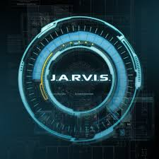
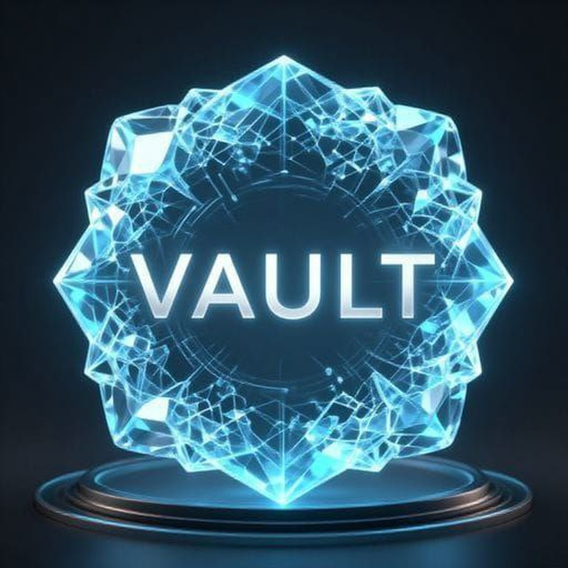
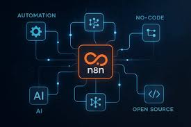

Projeler
Becerilerimi, yaratıcılığımı ve anlamlı dijital deneyimler oluşturma tutkumu yansıtan projelerim.

AI-PoweredJ.A.R.V.I.S AI Asistan
Google Gemini Pro API entegrasyonlu sesli AI asistan sistemi. Speech Recognition ve TTS ile doğal etkileşim.

AI-PoweredV.A.U.L.T Multi-Agent Interface
Çok ajanlı sistem arayüzü ile gerçek zamanlı komut işleme ve sistem izleme dashboard.

AutomationN8N Workflow Automation
V.A.U.L.T sistemi için N8N workflow automation ile gerçek zamanlı işlem yönetimi.
 GitHub
GitHubDoğuş Otomat Temizlik Takip V2
Modern React arayüzü, MySQL veritabanı, role-based authentication ve gelişmiş raporlama.
 Live v2.0
Live v2.0Dogi Teknik Destek Botu V2
Gemini 2.0-Flash API ile genişletilmiş hata kodu veritabanı, çoklu model desteği.
Live v3.0Dogi Teknik Destek Botu V3
Akıllı kullanıcı bilgisi yönetimi, adaptif çözüm ve glass-morphism arayüzü.
 Hardware
HardwareESP32 Kontrollü Kameralı Araç
Lisans bitirme projesi. WebSocket ile gerçek zamanlı video akışı ve PWM motor kontrolü.
V.A.U.L.T Protocol Interface
Sistem durumu izleme, gerçek zamanlı iletişim ve retro-futuristik komut paneli.
AcademicGüç Elektroniği Lab Projeleri
SPWM İnverter, Üç Fazlı Doğrutucu, IGBT Sürücü ve PWM Kontrol Sistemleri.
Full-StackDoğuş Otomat Temizlik Takip
Routeman temizlik kontrolleri, fotoğraf yükleme, admin paneli ve CSV raporlama.
 Automation
AutomationPython Dosya Yönetimi Otomasyonu
Büyük veri setlerinde toplu dosya işleme. %80'e varan zaman tasarrufu.